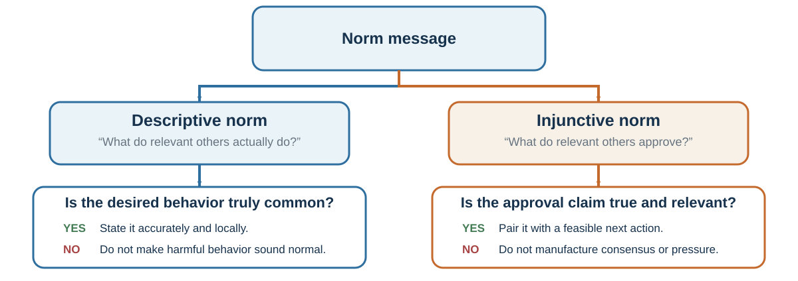

When Other People Become Evidence
“Whoso would be a man must be a nonconformist.”
— Ralph Waldo Emerson, “Self-Reliance”, 1841
A hiring committee hears the chair describe a candidate as “an obvious leader.” Around the table, heads nod. One member had doubts about the work sample but now wonders whether the others saw something she missed; another shares those doubts but does not want to hold up the decision. Their agreement looks the same from outside, although one may be revising a belief and the other withholding it.
What would the committee need to know before treating the nods as independent support?
Other people can provide information we could not obtain alone. Their agreement becomes informative only when we understand what they know, how their judgments formed, and whether they can disagree safely. Public alignment can reflect learning, pressure, or copying; the explanation changes what we should do next.
Learning goals
- Explain how informational and normative influence shape conformity, and distinguish changes in private belief from public compliance.
- Separate information about what people do from what they approve, and explain how public behavior can conceal private beliefs or amplify an early judgment.
- Redesign one meeting or norm message so private evidence is elicited before public influence begins.
Learning from other people’s choices
A new employee watches how colleagues handle an approaching deadline. Several submit without a final check, and the most experienced person says the check is unnecessary. Following them could save time because they know the system—or copy a mistake that nobody has tested.
People often learn selectively from prestigious, successful, similar, or numerous others. Those cues can be useful when they track relevant knowledge (Henrich & Gil-White, 2001; Boyd & Richerson, 1985). They are also fallible: prestige can spill across domains, success can reflect luck, and a majority can repeat one person’s claim. Shared attention and teaching make cultural learning possible (Tomasello, 1999; Tomasello et al., 2005; Boyd et al., 2011).
For the employee, the next useful step is to ask what the check was designed to catch and whether colleagues have independent evidence that it can be omitted. That question uses their experience while keeping the underlying problem in view.
Why we conform: informational and normative influence
Conformity is the process of adjusting beliefs or behavior toward a group’s views or expectations. It can involve learning from others, seeking acceptance, or avoiding disapproval.
Sherif’s autokinetic studies asked people to estimate the apparent movement of a stationary light in darkness. Individual estimates varied; group estimates converged (Sherif, 1936). Under ambiguity, other judgments provided information and a shared norm emerged.
Asch’s line-judgment studies made the answer much easier to see. A participant compared a target line with three alternatives, but heard other people give their answers first. Those people were working with the experimenter and deliberately agreed on a wrong line in twelve critical trials. Across 123 male college students, 36.8% of critical responses followed the wrong majority; a separate group of 37 judging independently made errors on 0.7% of those comparisons (Asch, 1956).
Unanimity mattered. In the supporting-partner conditions summarized by Asch (1955), a truthful ally reduced erroneous answers to roughly one quarter of the frequency under a unanimous majority. The lines had not become clearer; the social situation had changed. Deutsch and Gerard (1955) distinguished informational influence, following others to be correct, from normative influence, following to avoid disapproval or visible deviance. Real situations mix them.
Asch-type conformity varies across periods, cultures, tasks, and response conditions (Bond & Smith, 1996). In Figure 26.1, which comparison line matches the target? Make your own judgment, then imagine that everyone before you publicly answered B. Consider whether this would change your private belief, your public response, or both.
The committee’s nods illustrate the distinction in Table 26.1: learning something and withholding a doubt can produce the same public agreement.
An information cascade is a particular social-learning pattern: later actors follow visible earlier actions even when their private signals point elsewhere. It belongs within the informational account above; the apparent consensus may add little independent evidence.
Conformity is not inherently defective. Shared conventions make traffic, queues, meetings, and safety routines possible. The danger is that public agreement does not reveal private belief. Group size, task ambiguity, status, public response, and unanimity change the pressure; even one dissenter can make disagreement socially possible. The organizational question is therefore: What would someone hesitate to say here, even if it were true?
Social norms require a reference group
A social norm is not simply a behavior that many people perform. It concerns expectations within a relevant reference group: whose behavior is treated as typical, whose approval matters, and what people expect after compliance or violation. Bicchieri (2006) distinguishes empirical expectations—beliefs about what relevant others do—from normative expectations—beliefs about what relevant others think one ought to do. Both must be distinguished from a person’s own preference. Cooperation and Social Preferences develops how norms and social preferences require different evidence and how norm judgments can be elicited.
In the focus theory of normative conduct, a descriptive norm reports what people do, while an injunctive norm reports what people approve or disapprove of (Cialdini et al., 1990). The two branches in Figure 26.2 matter because a message can condemn a behavior while advertising that it is common. A late-night email may reveal that many colleagues work late without showing that they approve of the expectation. Silence in a meeting may reveal what people publicly do without revealing what they privately believe.
While traveling in Greece, I noticed cars parked beneath obvious no-parking signs. The posted rule and the behavior around it pointed in different directions.
While riding an electric scooter in China, I came to a pedestrian street with a sign prohibiting bicycles, motorcycles, and similar vehicles. Taking the detour would add about five minutes. As I hesitated, I saw several bicycles or scooters already on the street, and another rider went straight in ahead of me. I understood what the formal rule required, but I decided to follow the crowd.
By following them, I became part of the same visible signal that had influenced me.
Hotel guests were more likely to reuse towels when a sign described reuse by guests in the same room than under a standard environmental appeal in Goldstein et al.’s (2008) setting. Schultz et al. (2007) found that high-using households reduced energy use after comparison with neighbors, but low-using households could increase unless an injunctive approval cue accompanied the feedback. These results illustrate both social information and a boomerang risk.
When undesirable behavior is common, broadcasting its prevalence can normalize it. In a national-park field study, 7.92% of marked pieces of petrified wood were stolen under a sign emphasizing how many visitors took wood, compared with 1.67% under a sign asking visitors not to remove it (Cialdini et al., 2006). A truthful design should therefore test the reference group, prevalence, privacy, and whether an injunctive or dynamic norm communicates the goal without making harm look ordinary.
A dynamic norm reports a verified direction of change when the desired behavior is not yet common—for example, that more households are reducing food waste—rather than pretending that the majority has already changed (Sparkman & Walton, 2017). Choice Architecture develops when this design can help and the safeguards it requires. People may also underdetect how strongly descriptive norms affect their own behavior, which is one reason introspection alone is a poor norm audit (Nolan et al., 2008).
Can one violation make another seem acceptable?
Keizer, Lindenberg, and Steg (2008) attached flyers to parked bicycles in an alley. A prominent sign prohibited graffiti. In one condition the walls were clean; in another they carried graffiti. With no bin nearby, cyclists had to carry the flyer away to avoid littering. Among 77 cyclists in each condition, 33% discarded it in the clean setting, compared with 69% in the graffiti setting. The behavior being copied was not identical: evidence of one violated rule accompanied more violations of another.
This was one of six field comparisons of local disorder cues. It supports a bounded question about how visible surroundings communicate whether rules matter. The experiment did not test a citywide policing strategy, identify a single psychological mediator, or establish that neighborhoods inevitably descend from litter to serious crime. For an organization, the corresponding hypothesis is concrete: tolerated violations in one area may weaken the credibility of standards elsewhere. That possibility should be tested rather than assumed.
Social proof and information cascades
Social proof refers to using other people’s visible behavior as a guide to one’s own judgment or action. Others may appear informed, signal what a group approves, or demonstrate a workable convention. Whose behavior matters also depends on group identity. Ask what the public behavior is being taken to show.
Public behavior can also conceal private belief. In pluralistic ignorance, people privately doubt or reject a position yet misperceive others as accepting it because everyone observes the same cautious public behavior (Prentice & Miller, 1993). The misperception concerns the group’s private view, which public silence or compliance fails to reveal. Social Influence develops how this pattern can delay action and suppress warnings.
An information cascade develops when later actors set aside their private signals and follow earlier choices. Doing so can be individually rational when those earlier choices appear sufficiently informative. Once decisions cease to reflect private signals, additional actions add visibility without adding independent evidence (Bikhchandani et al., 1992).
The parallel routes in Figure 26.3 show why convergence alone cannot identify either a cascade or conformity pressure. An informational cascade can arise because earlier actions appear informative even when dissent is safe. Normative conformity can arise because disagreement is socially costly even when nobody thinks the majority knows more. The routes can interact, but the evidence needed to test them differs.
Digital counts make the dual role visible. Ratings, likes, downloads, and bestseller labels report earlier choices and influence later choices. In Salganik et al.’s (2006) Music Lab experiments, participants could listen to, rate, and download the same 48 songs. Random assignment placed them in an independent condition, with no popularity information, or in one of eight social worlds, each displaying only its own download counts.
In the first experiment, both conditions used randomly ordered grids. In the second, the independent list remained randomly ordered, while the social lists ranked songs by downloads. The example menus in Figure 26.4 make the changing information and order visible.
In both experiments, visible popularity made success more unequal and more variable across worlds. Quality still mattered, but early differences could grow as later listeners encountered different popularity histories. Popularity may therefore partly produce the success later used to validate it.
A feed can change expression
Social influence can travel through which messages become visible. Kramer, Guillory, and Hancock (2014) varied Facebook News Feed content for 689,003 users over one week. Relative to controls that omitted posts without regard to emotional wording, reducing positive content slightly reduced the share of positive words in users’ own posts; reducing negative content slightly reduced negative-word use.
The design changed exposure, giving stronger causal evidence than a correlation between friends’ posts. Its outcome was word use, however, rather than directly measured happiness or depression. The changes were small: reducing positive content lowered positive-word use by about 0.1 percentage point. The study therefore shows that a feed can alter expressed language; claims about lasting emotional states or well-being require additional measurement. It also prompted an editorial expression of concern about informed consent and opportunities to opt out (PNAS, 2014). The ability to change a digital environment does not settle whether a particular experiment should be run.
Independence before discussion
Across these studies, agreement has different meanings. In Sherif’s uncertain task, it helped establish a shared judgment; in Asch’s clear task, a unanimous group could pull answers away from visible evidence; in the music market, popularity helped generate later popularity. Before treating agreement as evidence, ask about relevant experience, independent sources, different perspectives, and how judgments were combined. Ten people repeating one report do not supply ten independent observations. Different job roles can supply new information, but only if their observations enter the discussion.
For the hiring committee, these findings motivate a procedure that preserves initial views before public discussion changes them. The following sequence applies the evidence; its usefulness still depends on the task and how the group responds:
- Elicit initial judgments, forecasts, or concerns privately.
- Preserve reasons and confidence, not only a vote.
- Display the distribution before the highest-status person argues.
- Invite the strongest contrary evidence and one designated ally for dissent.
- Deliberate, revise, and record what changed.
Discussion still matters. The sequence preserves the evidence needed to tell whether agreement followed learning or merely followed the first speaker.
Use Table 26.2 to audit the cue behind an apparent consensus before treating the consensus as additional evidence.
Practice Lab
Redesign one hiring, investment, safety, or project meeting. Produce a before-and-after process map showing when private signals are collected, what social information is displayed, whose judgments may be correlated, how one dissenter receives an ally, and how revisions are recorded. Add one descriptive norm message, one injunctive version, and—only if the trend is verified—one dynamic version. Name the reference group and state the backfire risk of each.
Take it forward
The committee can start its next meeting with written assessments of the work sample, collected before the chair speaks. When members later agree, their reasons and revisions remain visible. The group still benefits from discussion, while preserving evidence that a quick round of nods would have concealed.
When many people learn from the same visible signal and from one another, social evidence can become a feedback system. Markets, Mispricing, and Bubbles provides a demanding application: price is both an aggregate outcome of earlier judgments and an input into later attention, prediction, and action.
Social learning lets people use discoveries they could not reproduce alone. A medical student can learn germ theory and clinical routines without independently deriving either.
Cumulative culture depends on social transmission with enough fidelity to preserve useful practices and enough variation to improve them. Human groups can retain techniques whose causal structure is not obvious to any one learner. Over generations, tools and institutions become more complex than a single person could plausibly invent alone (Boyd & Richerson, 1985; Henrich, 2016; Tomasello, 1999).
That dependence becomes especially useful when a practice contains knowledge the learner cannot yet inspect. It also creates the risk examined in the main chapter: copying can preserve a useful routine or reproduce an untested error.
The cognitive capacities behind social learning
Inoue and Matsuzawa (2007) reported that trained chimpanzees could outperform adult humans in a demanding rapid-memory task for the locations of numerals. Humans are unusually able to coordinate attention, imitate, teach, infer intentions, divide labor, preserve discoveries, and accumulate culture. Our advantage is deeply social.
Comparative evidence also links social complexity with brain organization. Dunbar (1992) reported an association between typical social-group size and neocortex measures across primate species, and Sallet and colleagues (2011) found that experimentally different social-network sizes were associated with differences in neural systems in macaques. Keeping track of alliances, status, trust, intention, and coordination is a computational problem that can shape cognition.
One comparison makes the point vivid. In repeated matching-pennies games, chimpanzee choice frequencies were closer to the game-theoretic equilibrium than two human comparison samples, and the chimpanzees adjusted more closely to payoff changes (Martin et al., 2014). An unusually social mind can carry task-specific costs as well as benefits.
Copying and cumulative culture
Observation and imitation can preserve useful practices, but they can also preserve errors and obsolete routines. Useful accumulation requires some source of variation or innovation, sufficient transmission and retention, and processes that preserve, select, or correct practices across learners or generations. The mixture differs across settings.
In a classic comparison, human children and chimpanzees watched an adult retrieve a reward from a puzzle box. Some demonstrated actions were causally necessary; others were not. When the box was transparent and the mechanism visible, chimpanzees tended to omit irrelevant actions and reproduce the efficient route. Children often copied both relevant and irrelevant steps (Horner & Whiten, 2005).
At first glance, the chimpanzee looks more rational. It extracts the causal structure and ignores theater. Yet children’s tendency toward overimitation may serve a different problem. A learner cannot always know which step is irrelevant. A tap, gesture, sequence, or preparation may carry hidden causal information, social meaning, safety value, or conventional significance. High-fidelity copying can preserve opaque practices until their function becomes clear (Lyons et al., 2007).
Human copying is sensitive to intention, pedagogy, group membership, convention, and context. It can preserve needless bureaucracy as effectively as useful craft. An organization may continue a reporting ritual because “this is how it is done” even after the original risk has vanished.
Return to the employee considering whether to skip a final check. Before removing a copied step, ask what function it might preserve and what evidence could test whether that function is still needed.
Mimicry and synchrony
People in conversation often align without noticing. Posture, facial movements, speech rhythm, word choice, and gestures can become more similar. Chartrand and Bargh (1999) called this the chameleon effect: nonconscious behavioral mimicry that can increase interpersonal smoothness and liking. Some experiments have also found more helping after participants were mimicked, while reviews show that the effect depends on the relationship and setting (van Baaren et al., 2004; Chartrand & Lakin, 2013).
Similar postures appear in the family scene in Figure 26.5. Figure 26.6 compares behavior under different partner conditions, with stronger evidence for the face-rubbing contrast than for foot shaking.
Mimicry effects vary with relationship, status, goals, awareness, and how conspicuous the copying becomes. An interaction may feel smoother when people adjust to one another’s tempo, while obvious imitation may feel mocking.
Adjusting to another person’s tempo can communicate attention. Using imitation to bypass their judgment turns apparent rapport into covert pressure; smoother interaction alone does not make that objective defensible.
Social observation also requires causal explanation. When a colleague misses a deadline, the attribution audit developed in Confirmation Bias and Motivated Reasoning asks which evidence would distinguish character, incentive, information, and constraint accounts before a convenient story selects the next policy.
References cited in this chapter
Asch, S. E. (1955). Opinions and social pressure. Scientific American, 193(5), 31–35. https://doi.org/10.1038/scientificamerican1155-31
Asch, S. E. (1956). Studies of independence and conformity: I. A minority of one against a unanimous majority. Psychological Monographs: General and Applied, 70(9), 1–70.
Bicchieri, C. (2006). The grammar of society: The nature and dynamics of social norms. Cambridge University Press.
Bikhchandani, S., Hirshleifer, D., & Welch, I. (1992). A theory of fads, fashion, custom, and cultural change as informational cascades. Journal of Political Economy, 100(5), 992–1026.
Bond, R., & Smith, P. B. (1996). Culture and conformity: A meta-analysis of studies using Asch’s line judgment task. Psychological Bulletin, 119(1), 111–137.
Boyd, R., & Richerson, P. J. (1985). Culture and the evolutionary process. University of Chicago Press.
Boyd, R., Richerson, P. J., & Henrich, J. (2011). The cultural niche: Why social learning is essential for human adaptation. Proceedings of the National Academy of Sciences, 108(Supplement 2), 10918–10925.
Chartrand, T. L., & Bargh, J. A. (1999). The chameleon effect: The perception-behavior link and social interaction. Journal of Personality and Social Psychology, 76(6), 893–910.
Chartrand, T. L., & Lakin, J. L. (2013). The antecedents and consequences of human behavioral mimicry. Annual Review of Psychology, 64, 285–308.
Cialdini, R. B., Demaine, L. J., Sagarin, B. J., Barrett, D. W., Rhoads, K., & Winter, P. L. (2006). Managing social norms for persuasive impact. Social Influence, 1(1), 3–15.
Cialdini, R. B., Reno, R. R., & Kallgren, C. A. (1990). A focus theory of normative conduct. Journal of Personality and Social Psychology, 58(6), 1015–1026.
Deutsch, M., & Gerard, H. B. (1955). A study of normative and informational social influences upon individual judgment. Journal of Abnormal and Social Psychology, 51(3), 629–636.
Dunbar, R. I. M. (1992). Neocortex size as a constraint on group size in primates. Journal of Human Evolution, 22(6), 469–493.
Goldstein, N. J., Cialdini, R. B., & Griskevicius, V. (2008). A room with a viewpoint: Using social norms to motivate environmental conservation in hotels. Journal of Consumer Research, 35(3), 472–482.
Henrich, J. (2016). The secret of our success: How culture is driving human evolution, domesticating our species, and making us smarter. Princeton University Press.
Henrich, J., & Gil-White, F. J. (2001). The evolution of prestige: Freely conferred deference as a mechanism for enhancing the benefits of cultural transmission. Evolution and Human Behavior, 22(3), 165–196.
Horner, V., & Whiten, A. (2005). Causal knowledge and imitation/emulation switching in chimpanzees (Pan troglodytes) and children (Homo sapiens). Animal Cognition, 8(3), 164-181.
Inoue, S., & Matsuzawa, T. (2007). Working memory of numerals in chimpanzees. Current Biology, 17(23), R1004–R1005.
Keizer, K., Lindenberg, S., & Steg, L. (2008). The spreading of disorder. Science, 322(5908), 1681–1685. https://doi.org/10.1126/science.1161405
Kramer, A. D. I., Guillory, J. E., & Hancock, J. T. (2014). Experimental evidence of massive-scale emotional contagion through social networks. Proceedings of the National Academy of Sciences, 111(24), 8788–8790. https://doi.org/10.1073/pnas.1320040111
Lyons, D. E., Young, A. G., & Keil, F. C. (2007). The hidden structure of overimitation. Proceedings of the National Academy of Sciences, 104(50), 19751–19756.
Martin, C. F., Bhui, R., Bossaerts, P., Matsuzawa, T., & Camerer, C. (2014). Chimpanzee choice rates in competitive games match equilibrium game theory predictions. Scientific Reports, 4, 5182.
Nolan, J. M., Schultz, P. W., Cialdini, R. B., Goldstein, N. J., & Griskevicius, V. (2008). Normative social influence is underdetected. Personality and Social Psychology Bulletin, 34(7), 913–923.
PNAS. (2014). Editorial expression of concern: Experimental evidence of massive-scale emotional contagion through social networks. Proceedings of the National Academy of Sciences, 111(29), 10779. https://doi.org/10.1073/pnas.1412469111
Prentice, D. A., & Miller, D. T. (1993). Pluralistic ignorance and alcohol use on campus: Some consequences of misperceiving the social norm. Journal of Personality and Social Psychology, 64(2), 243–256.
Salganik, M. J., Dodds, P. S., & Watts, D. J. (2006). Experimental study of inequality and unpredictability in an artificial cultural market. Science, 311(5762), 854–856.
Sallet, J., Mars, R. B., Noonan, M. P., Andersson, J. L., O’Reilly, J. X., Jbabdi, S., Croxson, P. L., Jenkinson, M., Miller, K. L., & Rushworth, M. F. S. (2011). Social network size affects neural circuits in macaques. Science, 334(6056), 697–700.
Schultz, P. W., Nolan, J. M., Cialdini, R. B., Goldstein, N. J., & Griskevicius, V. (2007). The constructive, destructive, and reconstructive power of social norms. Psychological Science, 18(5), 429–434.
Sherif, M. (1936). The psychology of social norms. Harper.
Sparkman, G., & Walton, G. M. (2017). Dynamic norms promote sustainable behavior, even if it is counternormative. Psychological Science, 28(11), 1663–1674.
Tomasello, M. (1999). The cultural origins of human cognition. Harvard University Press.
Tomasello, M., Carpenter, M., Call, J., Behne, T., & Moll, H. (2005). Understanding and sharing intentions: The origins of cultural cognition. Behavioral and Brain Sciences, 28(5), 675–691.
van Baaren, R. B., Holland, R. W., Kawakami, K., & van Knippenberg, A. (2004). Mimicry and prosocial behavior. Psychological Science, 15(1), 71-74.
Social norms require a reference group
A social norm is not simply a behavior that many people perform. It concerns expectations within a relevant reference group: whose behavior is treated as typical, whose approval matters, and what people expect after compliance or violation. Bicchieri (2006) distinguishes empirical expectations—beliefs about what relevant others do—from normative expectations—beliefs about what relevant others think one ought to do. Both must be distinguished from a person’s own preference. Cooperation and Social Preferences develops how norms and social preferences require different evidence and how norm judgments can be elicited.
In the focus theory of normative conduct, a descriptive norm reports what people do, while an injunctive norm reports what people approve or disapprove of (Cialdini et al., 1990). The two branches in Figure 26.2 matter because a message can condemn a behavior while advertising that it is common. A late-night email may reveal that many colleagues work late without showing that they approve of the expectation. Silence in a meeting may reveal what people publicly do without revealing what they privately believe.

While traveling in Greece, I noticed cars parked beneath obvious no-parking signs. The posted rule and the behavior around it pointed in different directions.
While riding an electric scooter in China, I came to a pedestrian street with a sign prohibiting bicycles, motorcycles, and similar vehicles. Taking the detour would add about five minutes. As I hesitated, I saw several bicycles or scooters already on the street, and another rider went straight in ahead of me. I understood what the formal rule required, but I decided to follow the crowd.
By following them, I became part of the same visible signal that had influenced me.
Hotel guests were more likely to reuse towels when a sign described reuse by guests in the same room than under a standard environmental appeal in Goldstein et al.’s (2008) setting. Schultz et al. (2007) found that high-using households reduced energy use after comparison with neighbors, but low-using households could increase unless an injunctive approval cue accompanied the feedback. These results illustrate both social information and a boomerang risk.
When undesirable behavior is common, broadcasting its prevalence can normalize it. In a national-park field study, 7.92% of marked pieces of petrified wood were stolen under a sign emphasizing how many visitors took wood, compared with 1.67% under a sign asking visitors not to remove it (Cialdini et al., 2006). A truthful design should therefore test the reference group, prevalence, privacy, and whether an injunctive or dynamic norm communicates the goal without making harm look ordinary.
A dynamic norm reports a verified direction of change when the desired behavior is not yet common—for example, that more households are reducing food waste—rather than pretending that the majority has already changed (Sparkman & Walton, 2017). Choice Architecture develops when this design can help and the safeguards it requires. People may also underdetect how strongly descriptive norms affect their own behavior, which is one reason introspection alone is a poor norm audit (Nolan et al., 2008).
Can one violation make another seem acceptable?
Keizer, Lindenberg, and Steg (2008) attached flyers to parked bicycles in an alley. A prominent sign prohibited graffiti. In one condition the walls were clean; in another they carried graffiti. With no bin nearby, cyclists had to carry the flyer away to avoid littering. Among 77 cyclists in each condition, 33% discarded it in the clean setting, compared with 69% in the graffiti setting. The behavior being copied was not identical: evidence of one violated rule accompanied more violations of another.
This was one of six field comparisons of local disorder cues. It supports a bounded question about how visible surroundings communicate whether rules matter. The experiment did not test a citywide policing strategy, identify a single psychological mediator, or establish that neighborhoods inevitably descend from litter to serious crime. For an organization, the corresponding hypothesis is concrete: tolerated violations in one area may weaken the credibility of standards elsewhere. That possibility should be tested rather than assumed.